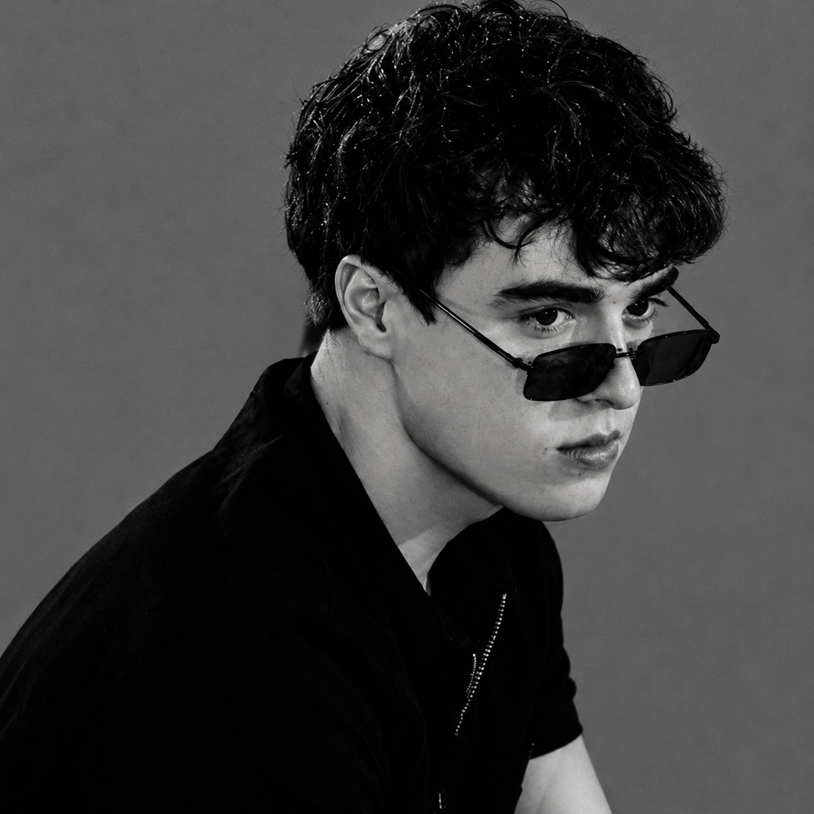
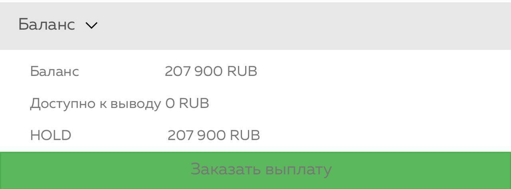
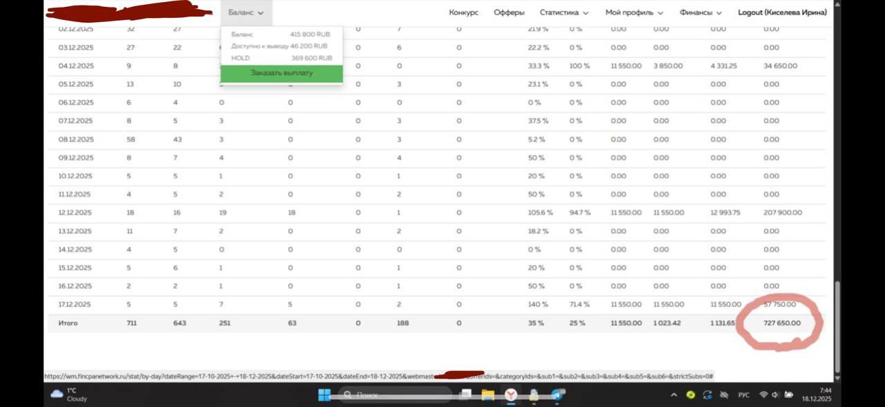
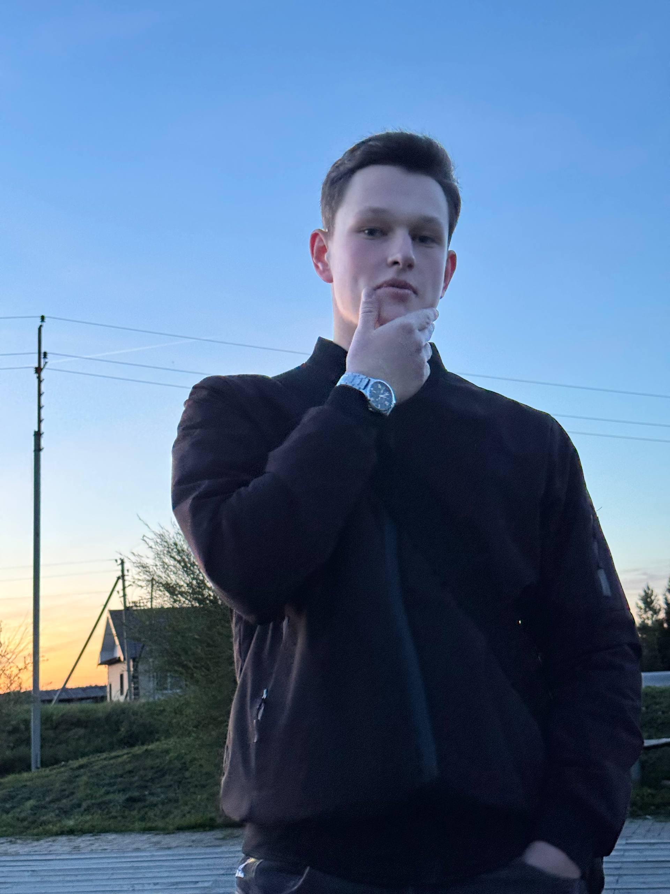
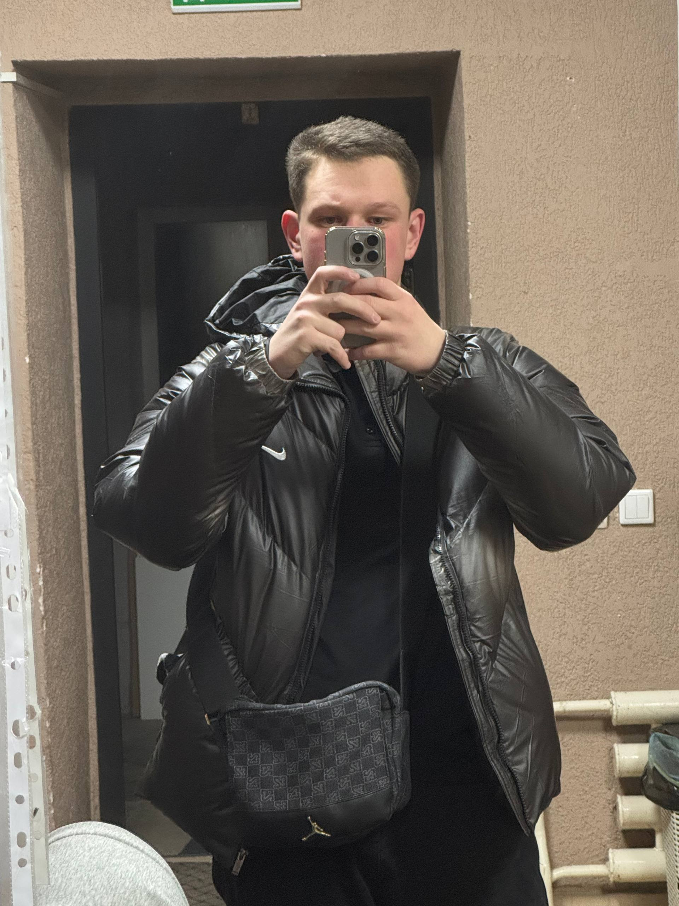
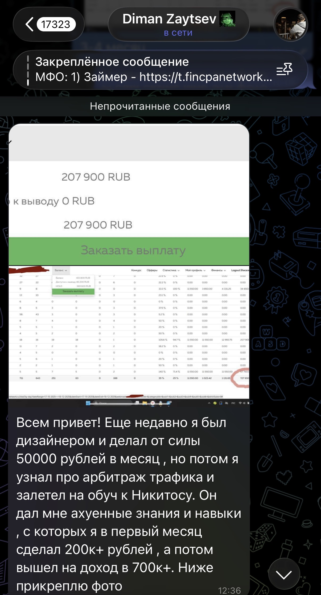

01 / СООСНОВАТЕЛЬ
Никита
18 лет, три года в финансовой вертикали. Открыл отдел продаж и вместе с партнёром создал проект с десятками сотрудников. Лично проводит консультации и сопровождает участников.
ПАРТНЁРСКИЕ ПРОГРАММЫ / РОССИЯ
Твой формат.
Твои возможности.
Разовое или регулярное сотрудничество в финансовой вертикали. Подберём вариант лично — с учётом твоих целей и времени.
Обсудить сотрудничествоНикита · 18 лет · 3 года в финансовой вертикали
Бесплатная консультация · Лично

ТВОЙ СТАРТ / ТРИ ВОПРОСА
Ответь на три вопроса — получишь предварительный вариант для обсуждения на консультации.
Ответы остаются в этой вкладке.ВАРИАНТ ДЛЯ ОБСУЖДЕНИЯ
Окончательный формат и условия определим на личной консультации.
01 / ЗНАКОМСТВО
Я Никита, мне 18 лет. Три года занимаюсь финансовой вертикалью. Вместе с Алексом создал AlfaOmega — проект для сотрудничества по партнёрским программам.
За это время открыл отдел продаж и вместе с партнёром выстроил проект с десятками сотрудников. Продолжаю изучать смежные направления и делиться практическим опытом.
Первую консультацию провожу сам: узнаю тебя, твои цели и возможности. Затем предлагаю формат, который считаю подходящим, и лично сопровождаю после старта.
ПАРТНЁРСКИЕ ПРОГРАММЫ
Предложения компаний доступны через партнёрские программы.
Посмотреть список компаний


ЛЮДИ / ALFAOMEGA
AlfaOmega — проект Никиты и Алекса. Здесь можно познакомиться с каждым и перейти к его контактам.
18 лет, три года в финансовой вертикали. Открыл отдел продаж и вместе с партнёром создал проект с десятками сотрудников. Лично проводит консультации и сопровождает участников.
Второй основатель AlfaOmega. Для личного знакомства — Telegram @AlexTraf6. Публикации Алекса доступны в его отдельном канале.
02 / ВАРИАНТЫ СОТРУДНИЧЕСТВА
Начать с одного действия или включиться регулярно — обсудим оба варианта.
Выполни одно согласованное целевое действие по условиям партнёрской программы.
Сотрудничество для тех, кто готов уделять проекту время каждый день.
Суммы — ориентиры проекта, а не гарантированный доход. Период расчёта, задачи и порядок выплат обсуждаем до начала участия. Результат зависит от партнёрской программы и выполненной работы.
03 / УСЛОВИЯ СТАРТА
Детали выбранной программы обсудим лично. Здесь — базовые условия участия.
Участники из России.
Варианты для старта обсудим на консультации.
Компьютер не обязателен.
Каждый день, в вечернее время. Часы внутри вечера выбираешь самостоятельно.
Партнёрские программы, в том числе в статусе самозанятого. Условия обсуждаем индивидуально.
ТВОЙ МАРШРУТ / ПОСЛЕ ЗВОНКА
У каждого формата свой темп. Подробности и условия согласуем перед началом сотрудничества.
Согласованное действие, выплата и решение о продолжении. Ориентир Никиты для первой недели — 15–20 тысяч рублей; сумма и срок зависят от условий программы и не гарантированы.
Первые шагиМатериалы и постепенное включение в работу. Ориентир первых выплат — около двух недель, без гарантии срока. Дальше можно развивать навыки и учиться организовывать команду.
Путь развития04 / КАК НАЧИНАЕМ
Консультация бесплатная. Её провожу лично я — Никита, сооснователь проекта.
Выслушаю тебя, узнаю, что ты ищешь и сколько времени готов уделять сотрудничеству.
Предложу подходящие форматы. Расскажу о программе, целевых действиях и вознаграждении.
После выбора формата лично сопровождаю участников. В проекте также работают менеджеры и отдел продаж.
ИСТОРИИ УЧАСТНИКОВ / КЕЙС 01
Пробовал монтаж и дизайн. Пришёл в наставничество. Получил первый результат и начал расти через команду.
История со слов Никиты, сооснователя AlfaOmega.ДИМА / РЕЗУЛЬТАТЫ В КАБИНЕТЕ
Два скриншота из кейса, предоставленные Никитой. Периоды участия указаны с его слов.

Открыть скриншотНа скриншоте вся сумма находится на HOLD. Доступно к выводу — 0 ₽.

Открыть скриншотИтог отмечен на скриншоте. В меню баланса отдельно показаны 415 800 ₽, из них доступно к выводу 46 200 ₽, на HOLD — 369 600 ₽.
На скриншотах показаны разные показатели: баланс и итог статистики. Эти суммы не означают подтверждённый выплаченный доход. HOLD — сумма, находящаяся на удержании. Это индивидуальный кейс, а не обещание аналогичного результата.
КЕЙС 01 / ФОТОСЕРИЯ
Дима — участник AlfaOmega.
От наставничества к своей команде.


ДО СТАРТА
Дима занимался монтажом и дизайном, пробовал себя в разных нишах. Найти направление, в котором удалось бы закрепиться и развиваться, пока не получалось.
Монтаж → дизайн → поиск1-Й МЕСЯЦ
Один из менеджеров проекта познакомил Диму с Никитой. Дима вошёл в наставничество и за первый месяц получил свой первый результат. На скриншоте, предоставленном Никитой для этого этапа, — баланс 207 900 ₽; вся сумма на HOLD, доступно к выводу 0 ₽. Затем работа начала постепенно масштабироваться.
207 900 ₽ / баланс на HOLD2-Й МЕСЯЦ
По словам Никиты, на втором месяце обучения Дима вышел на доход 300 000 ₽ в месяц. Дальнейшее масштабирование строилось через работу в команде.
300 000 ₽ / месяц3–4-Й МЕСЯЦ
К этому этапу Никита относит второй скриншот: в таблице статистики отмечен итог 727 650 ₽. Это показатель кабинета, а не подтверждение выплаченного личного дохода. Полный снимок и значения баланса можно открыть выше.
727 650 ₽ / итог статистикиСЕЙЧАС
Сейчас Дима работает самостоятельно, без личного наставничества Никиты. У него команда более чем из 10 сотрудников, и он продолжает развивать своё направление.
Более 10 сотрудниковЭто индивидуальная история участника. Результат другого человека зависит от его работы и условий программы.
Обсудить свой стартОБРАТНАЯ СВЯЗЬ / TELEGRAM
Отзывы о сотрудничестве собраны в отдельном Telegram-канале. Посмотри их перед консультацией, а вопросы обсудим лично.
ЛИЧНЫЙ ОПЫТ / ОТЗЫВ УЧАСТНИКА
Дима рассказывает, что до обучения занимался дизайном и зарабатывал до 50 тысяч рублей в месяц. Затем узнал об арбитраже трафика и пришёл в наставничество к Никите.
По его словам, полученные знания и навыки помогли ему выйти на 200 тысяч рублей и выше в первый месяц, а позднее — на 700 тысяч и выше.
Это личный опыт автора; суммы указаны с его слов. Исходный скриншот предоставлен Никитой.

Скриншот отзыва05 / БЕЗ НЕДОСКАЗАННОСТИ
О старте, занятости, выплатах и сопровождении.
Задать свой в TelegramПоказано ответов: 13
AlfaOmega — проект Никиты и Алекса в финансовой вертикали. Мы привлекаем людей на партнёрские предложения и индивидуально подбираем формат сотрудничества. У Никиты три года опыта в этом направлении; в проекте — десятки сотрудников и собственный отдел продаж.
Ребят от 17 до 28 лет из России, заинтересованных в сотрудничестве по партнёрским программам. Конкретный вариант подбираем на консультации.
Нет, предыдущий опыт не обязателен. На первом звонке познакомимся, обсудим твои возможности и варианты, с которых можно начать.
Из техники достаточно телефона, компьютер не обязателен. Остальные условия зависят от выбранной партнёрской программы — расскажу о них до начала сотрудничества.
Да, есть разовый формат. Ты выполняешь одно согласованное целевое действие и получаешь выплату сразу после его выполнения. Само действие, условия и размер вознаграждения объясню на звонке.
Для регулярного формата нужно выделять 2–3 часа в день, в вечернее время. Конкретные часы в пределах вечера выбираешь самостоятельно.
Нет, консультация бесплатная. Её провожу лично я: выслушаю тебя, узнаю получше и предложу подходящие варианты сотрудничества.
Я, Никита, лично сопровождаю участников после выбора формата. При регулярном сотрудничестве остаёмся на связи: по мере выполнения задач можно разбирать дополнительные темы, включая создание команды и управление её работой. В AlfaOmega также есть менеджеры и собственный отдел продаж.
Участники работают на себя по партнёрским программам, в том числе в статусе самозанятых. Индивидуальный формат и условия обсуждаем до начала работы.
В регулярном формате есть возможность карьерного роста. Проект обозначает ориентир от 100 000 ₽ и перспективу роста до 300 000 ₽ и выше. Суммы не гарантированы: период, условия выплат и возможность достижения обсуждаем на консультации. Результат зависит от программы и выполненных задач.
В разовом формате Никита обозначает ориентир 15–20 тысяч рублей за первую неделю. В регулярном формате сначала изучают материалы и подключаются к работе; ориентир первых выплат — примерно две недели. Эти суммы и сроки не гарантированы: результат зависит от выбранной программы и выполнения её условий. Конкретное действие, размер вознаграждения и порядок выплат обсуждаем до начала участия.
В регулярном формате можно развивать навыки и обсуждать с Никитой создание своей команды: как распределять задачи, управлять работой и выстраивать доход от результатов команды. Дополнительные темы разбираем по мере выполнения целевых действий. Темп и условия развития индивидуальны.
Энтузиазм, желание учиться и разбираться в деталях, готовность пробовать новое и применять знания. Опыт для старта не обязателен; подходящий формат определяем на личной консультации.
Попробуй другое слово или напиши мне в Telegram.
06 / ТВОЙ СЛЕДУЮЩИЙ ШАГ
Напиши в Telegram. Договоримся о времени, познакомимся и разберём твои варианты сотрудничества.